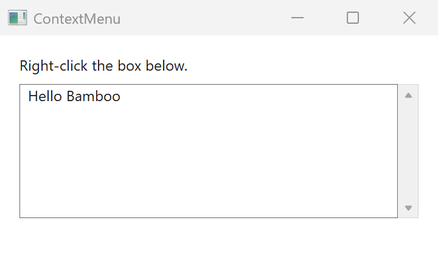

เมนูคลิกขวา (ContextMenuStrip)
ในกล่องเครื่องมือ: เมนูคลิกขวา · เทียบกับ WinForms: ContextMenuStrip
เมนูที่ขึ้นเมื่อผู้ใช้คลิกขวาที่ control เช่น คัดลอก วาง ลบ - คำสั่งที่เกี่ยวกับสิ่งที่คลิกอยู่
- ใส่รายการใน Items: บรรทัดละรายการ แบบ
method | ข้อความเช่นclear_clicked | Clear·-อย่างเดียวคือเส้นคั่น - แล้วตั้ง ContextMenu ของ control ที่ต้องการให้คลิกขวาได้ เป็น Id ของเมนูนี้ - ใช้เมนูเดียวกับหลาย control ได้
- แต่ละรายการเรียก method ตามชื่อที่เขียนไว้หน้า
|

อยู่ในกล่องเครื่องมือกลุ่ม เมนูและแถบเครื่องมือ (Menus and toolbars) - ลากมาวางแล้วมันจะไปอยู่ในแถบด้านล่างของตัวออกแบบ (ไม่ได้อยู่บนหน้าต่าง) · ในโค้ดเรียกมันว่า ui.ชื่อId ซึ่งเป็นชนิด phai_ui::ctl::ContextMenu
ตัวอย่าง
1. เมนูกับ control ที่ใช้มัน
note_menu มีสามรายการและเส้นคั่น · ช่อง note ตั้ง context_menu = "note_menu":
# Phai Studio form - docs/phaiform.md
format = 1
[form]
name = "ContextmenuDemo"
title = "ContextMenu"
size = [360, 200]
start = "center"
[[control]]
kind = "label"
id = "hint"
text = "Right-click the box below."
bounds = [16, 12, 328, 24]
[[control]]
kind = "textarea"
id = "note"
bounds = [16, 40, 328, 110]
context_menu = "note_menu"
[[control]]
kind = "contextmenu"
id = "note_menu"
items = ["upper_clicked | Make it upper case", "lower_clicked | Make it lower case", "-", "clear_clicked | Clear"]2. method ของแต่ละรายการ
fn upper_clicked(&mut self, ui: &ContextmenuDemoUi) {
ui.note.set_text(&ui.note.text().to_uppercase());
}
fn lower_clicked(&mut self, ui: &ContextmenuDemoUi) {
ui.note.set_text(&ui.note.text().to_lowercase());
}
fn clear_clicked(&mut self, ui: &ContextmenuDemoUi) {
ui.note.clear();
}หน้าต่างตัวอย่างทั้งหมด: contextmenu_demo.phaiform กับ contextmenu_demo.rs ในโปรเจกต์ docs/help-src/examples/controls - รันด้วย cargo run -- contextmenu
Properties
ตั้งได้ในหน้าต่าง Properties เมื่อเลือกมันบนฟอร์ม - ตารางนี้สร้างจาก Phai Studio เอง จึงตรงกับที่เห็นในโปรแกรมเสมอ
| Property | ค่าเริ่มต้น | ทำอะไร |
|---|---|---|
| ออกแบบ | ||
| รหัส | contextmenu | ชื่อ control ในโค้ด และ #id ใน CSS |
| ข้อมูล | ||
| รายการ | copy_clicked | Copy
paste_clicked | Paste | บรรทัดละรายการ: เมธอด | ข้อความ - เลือกแล้วเมธอดนั้นทำงาน; - อย่างเดียวคือเส้นคั่น |
Events
ดับเบิลคลิกชื่อ event ในแท็บ Events ของ Properties แล้ว Phai Studio จะเขียน method ให้ (ชื่อในตารางนี้สมมติว่า Id ของมันคือ contextmenu และอยู่บนฟอร์ม MainWindow) - ชี้เมาส์ที่ชนิดของ e เพื่อดูชื่อเต็ม
| Event | ทำอะไร | method ที่ Phai Studio เขียนให้ |
|---|---|---|
| Opening | เมนูกำลังจะเปิด - ติ๊ก ปิดใช้ หรือเปลี่ยนชื่อรายการได้ตรงนี้ | fn contextmenu_opening(&mut self, ui: &MainWindowUi) |
ลองทำเอง
- เพิ่มรายการ "นับตัวอักษร" ที่บอกจำนวนตัวอักษรด้วย
message_box - ใช้เมนูเดียวกันกับช่องข้อความอีกช่อง - ต้องรู้ว่าคลิกขวาที่ช่องไหน (ใช้ event Opening หรือแยกเมนู)